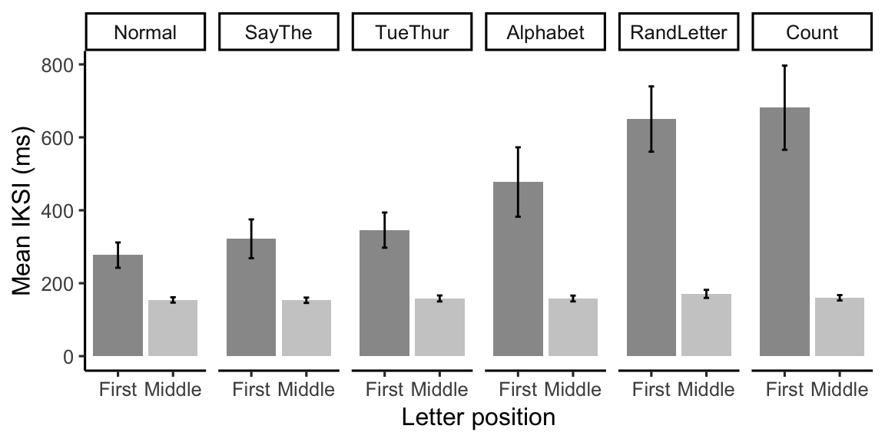
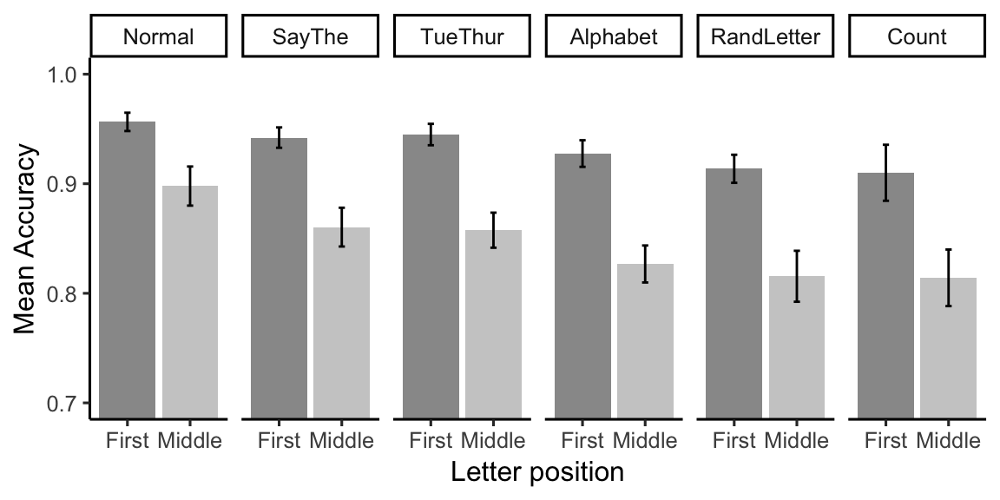

Analysis E2 Verbal Suppression
Matt
5/14/2019
E2_Analysis.RmdE1B IKSI Analysis
#load E1B data
E2_data <- talk_type_E2_data
# IKSI analysis
E2_data <- E2_data %>%
filter(accuracy == 1,
iksis < 5000,
LetterType != "Space") %>%
mutate(subject = as.factor(subject),
suppression = as.factor(suppression),
LetterType = as.factor(LetterType)) %>%
group_by(subject,suppression,LetterType) %>%
summarise(mean_iksi = mean(modified_recursive_moving(iksis)$restricted),
prop_removed = modified_recursive_moving(iksis)$prop_removed)
E2_aov_out <- aov(mean_iksi ~ suppression*LetterType +
Error(subject/(suppression*LetterType)), E2_data)
knitr::kable(xtable(summary(E2_aov_out)))| Df | Sum Sq | Mean Sq | F value | Pr(>F) | |
|---|---|---|---|---|---|
| Residuals | 14 | 3037873 | 216990.91 | NA | NA |
| suppression | 5 | 1198393 | 239678.67 | 15.59635 | 0.0000000 |
| Residuals | 70 | 1075733 | 15367.62 | NA | NA |
| LetterType | 1 | 4045024 | 4045023.63 | 21.41071 | 0.0003917 |
| Residuals | 14 | 2644954 | 188925.27 | NA | NA |
| suppression:LetterType | 5 | 1072171 | 214434.27 | 14.28133 | 0.0000000 |
| Residuals | 70 | 1051050 | 15015.00 | NA | NA |
E2_data$suppression <- fct_relevel(E2_data$suppression,c("Normal","SayThe","TueThur","Alphabet","RandLetter","Count"))
E2_iksi_table <- E2_data %>%
group_by(suppression,LetterType) %>%
summarize(mIKSI = mean(mean_iksi),
sem = sd(mean_iksi)/sqrt(length(mean_iksi)))
#levels(E1A_iksi_table$paragraph) <- c("Say Letter", "Say Word")
E2_graph_iksi <- ggplot(E2_iksi_table, aes(x=LetterType,
y=mIKSI,
fill=LetterType))+
geom_bar(stat="identity",position="dodge")+
geom_errorbar(aes(ymin=mIKSI-sem,
ymax=mIKSI+sem), width=.1,
linetype="solid")+
scale_fill_grey(start = 0.6, end = 0.8, na.value = "red",
aesthetics = "fill")+
theme_classic(base_size=12)+
theme(legend.position = "none",
legend.title = element_blank())+
ylab("Mean IKSI (ms)")+
xlab("Letter position")+
facet_wrap(~suppression, nrow=1)
knitr::kable(E2_iksi_table)| suppression | LetterType | mIKSI | sem |
|---|---|---|---|
| Normal | First | 276.9624 | 34.722182 |
| Normal | Middle | 154.1825 | 7.340545 |
| SayThe | First | 321.7087 | 53.218289 |
| SayThe | Middle | 153.2280 | 7.335822 |
| TueThur | First | 345.5774 | 48.242259 |
| TueThur | Middle | 158.1935 | 8.228906 |
| Alphabet | First | 477.5381 | 95.189790 |
| Alphabet | Middle | 158.0736 | 7.993724 |
| RandLetter | First | 650.1842 | 89.511870 |
| RandLetter | Middle | 170.7278 | 11.030549 |
| Count | First | 681.3246 | 115.473813 |
| Count | Middle | 159.9962 | 7.404675 |

get letter level accuracy estimates
This chunk was previously evaluated, and the talk_type_e2_data.RData file was updated with estimates of letter level accuracy.
E2acc_data <- talk_type_E2_data
E2acc_data$closest[is.na(E2acc_data$closest)] <- ""
letter_accuracy <- E2acc_data$accuracy
for(i in 1:dim(E2acc_data)[1]){
clet <- as.character(E2acc_data[i,]$letters)
cword <- unlist(strsplit(as.character(E2acc_data[i,]$closest),split=""))
if(E2acc_data$accuracy[i] == 0){
if(length(cword)>0){
if(E2acc_data[i,]$LetterPosition <= length(cword)){
if(clet != " "){
if(clet == cword[E2acc_data[i,]$LetterPosition]){
letter_accuracy[i] <- 1
} else {
letter_accuracy[i] <- 0
}
}
}
}
}
}
E2acc_data <- cbind(E2acc_data,letter_accuracy)Accuracy ANOVA
E2acc_data <- talk_type_E2_data
# Accuracy
E2acc_data <- E2acc_data %>%
mutate(subject = as.factor(subject),
suppression = as.factor(suppression),
LetterType = as.factor(LetterType)) %>%
filter(LetterType != "Space") %>%
group_by(subject,suppression, LetterType) %>%
summarise(mean_acc = mean(letter_accuracy))
E2acc_aov_out <- aov(mean_acc ~ suppression*LetterType + Error(subject/(suppression*LetterType)), E2acc_data)
E2acc_apa_print <- apa_print(E2acc_aov_out)
E2acc_means <- model.tables(E2acc_aov_out,"means")
knitr::kable(xtable(summary(E2acc_aov_out)))| Df | Sum Sq | Mean Sq | F value | Pr(>F) | |
|---|---|---|---|---|---|
| Residuals | 14 | 0.3972025 | 0.0283716 | NA | NA |
| suppression | 5 | 0.0965600 | 0.0193120 | 4.961481 | 0.0006037 |
| Residuals | 70 | 0.2724671 | 0.0038924 | NA | NA |
| LetterType | 1 | 0.3410941 | 0.3410941 | 125.849925 | 0.0000000 |
| Residuals | 14 | 0.0379445 | 0.0027103 | NA | NA |
| suppression:LetterType | 5 | 0.0091988 | 0.0018398 | 2.712384 | 0.0268243 |
| Residuals | 70 | 0.0474795 | 0.0006783 | NA | NA |
Accuracy table and plots
E2acc_data$suppression <- fct_relevel(E2acc_data$suppression,c("Normal","SayThe","TueThur","Alphabet","RandLetter","Count"))
E2_acc_table <- E2acc_data %>%
group_by(suppression,LetterType) %>%
summarize(mAcc = mean(mean_acc),
sem = sd(mean_acc)/sqrt(length(mean_acc)))
#levels(E1A_acc_table$paragraph) <- c("Say Letter", "Say Word")
E2_graph_acc <- ggplot(E2_acc_table, aes(x=LetterType,
y=mAcc,
fill=LetterType))+
geom_bar(stat="identity",position="dodge")+
geom_errorbar(aes(ymin=mAcc-sem,
ymax=mAcc+sem), width=.1,
linetype="solid")+
scale_fill_grey(start = 0.6, end = 0.8, na.value = "red",
aesthetics = "fill")+
theme_classic(base_size=12)+
theme(legend.position = "none",
legend.title = element_blank())+
ylab("Mean Accuracy")+
xlab("Letter position")+
coord_cartesian(ylim=c(.7,1))+
facet_wrap(~suppression, nrow=1)
knitr::kable(E2_acc_table)| suppression | LetterType | mAcc | sem |
|---|---|---|---|
| Normal | First | 0.9564783 | 0.0083601 |
| Normal | Middle | 0.8978740 | 0.0178426 |
| SayThe | First | 0.9421110 | 0.0093006 |
| SayThe | Middle | 0.8603967 | 0.0176930 |
| TueThur | First | 0.9448931 | 0.0097569 |
| TueThur | Middle | 0.8576019 | 0.0159934 |
| Alphabet | First | 0.9275567 | 0.0121435 |
| Alphabet | Middle | 0.8267572 | 0.0168839 |
| RandLetter | First | 0.9136387 | 0.0128113 |
| RandLetter | Middle | 0.8155491 | 0.0232558 |
| Count | First | 0.9100080 | 0.0255653 |
| Count | Middle | 0.8141323 | 0.0258036 |
